RadWorld / Spatial studies
Cross-sections. One world.
第二轮围绕一个概念展开：多个切面共同构成一个完整空间，字母 R 隐藏在形体或负空间中。




SVG 矢量源文件 · 透明背景 · 浅色模式展示单色版本
第二轮概念预览 · 源文件保存在 logos/concepts · 查看第一轮
RadWorld / Spatial studies
第二轮围绕一个概念展开：多个切面共同构成一个完整空间，字母 R 隐藏在形体或负空间中。

SVG 矢量源文件 · 透明背景 · 浅色模式展示单色版本
第二轮概念预览 · 源文件保存在 logos/concepts · 查看第一轮